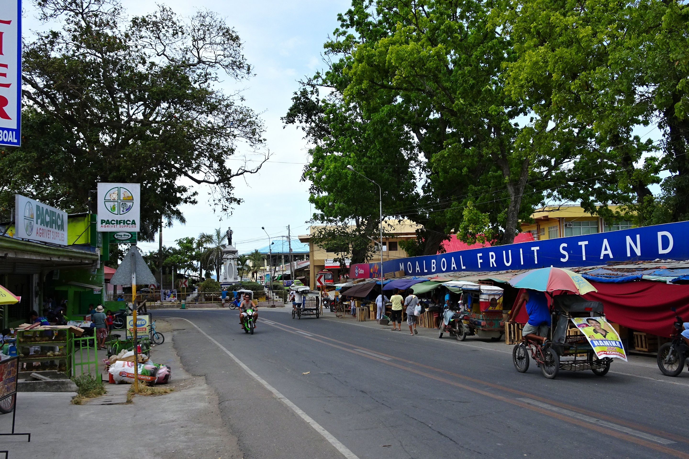
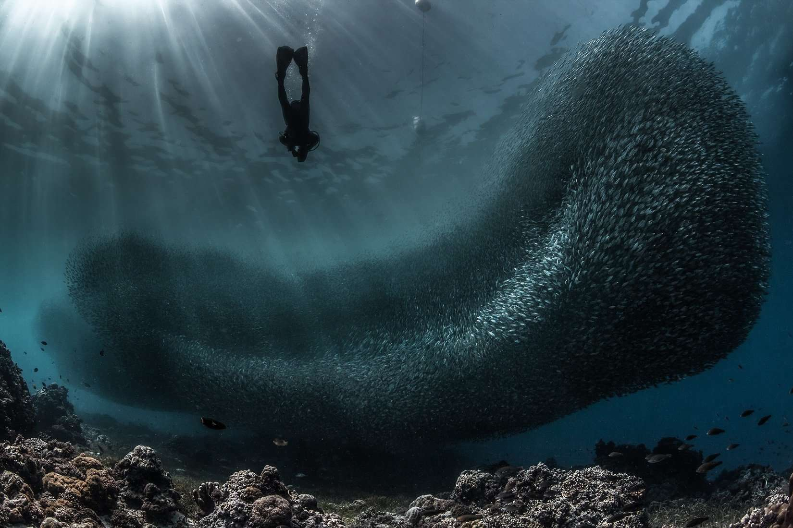
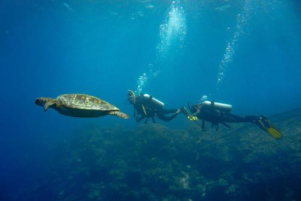
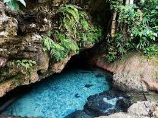
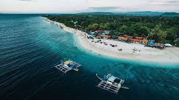
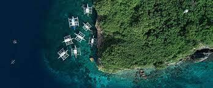
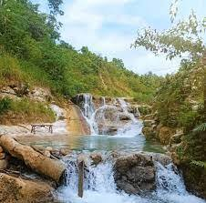

Since sardines are filter feeders, they swim relatively close to the surface,
so the experience would be accessible for non-divers. The Sardine Run, also
called the bait ball, is a natural phenomenon that happens when massive schools
of sardines swim in the shallow waters to feed on planktons.

Turtle Bay Moalboal is one of the most underrated snorkeling spots in Cebu,
and perhaps one of our favourite spots in all of the Philippines. It’s home
to some of the most incredible, healthy coral we’ve ever seen and it’s so easily
accessible. A must visit dive site while you’re in Moalboal!

Busay Cave and Spring is a hidden gem, and is one of the fun things to do in Moalboal.
Regarded as one of the secrets of Cebu, this off the beaten track tourist destination
is well known by locals. The underground spring supplies the nearby town with its water
supply, but is also a fabulous cave in which you can swim.

White Beach Moalboal, also known as Basdaku Beach, is the most popular beach in the busy
tourist town of Moalboal, and one of the nicest South Cebu beaches.

Pescador Island is the top dive site of Moalboal, in Cebu, Philippines.
While diving at Magic Island Dive Resort, this is the place you have to
explore for sure and after one dive, you'll probably want to come back.

Budlot Spring and Taginis Falls in Moalboal are one of Cebu’s secrets. Still largely unheard of,
Taginis Falls and Budlot Spring are starting to generate interest thanks to word-of-mouth visitors.
They may not be the tallest like Mantayupan, as impressive as Kawasan, or gushing with tonnes of
water, but they are a lot of fun. For a bit of adventure, and to visit somewhere unique, Taginis
Falls is one of the must-see waterfalls in Cebu.